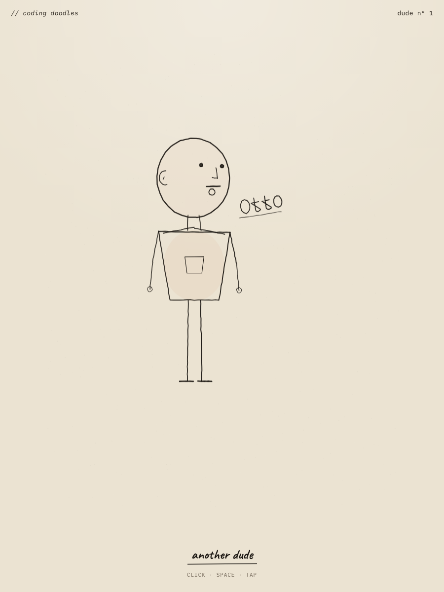
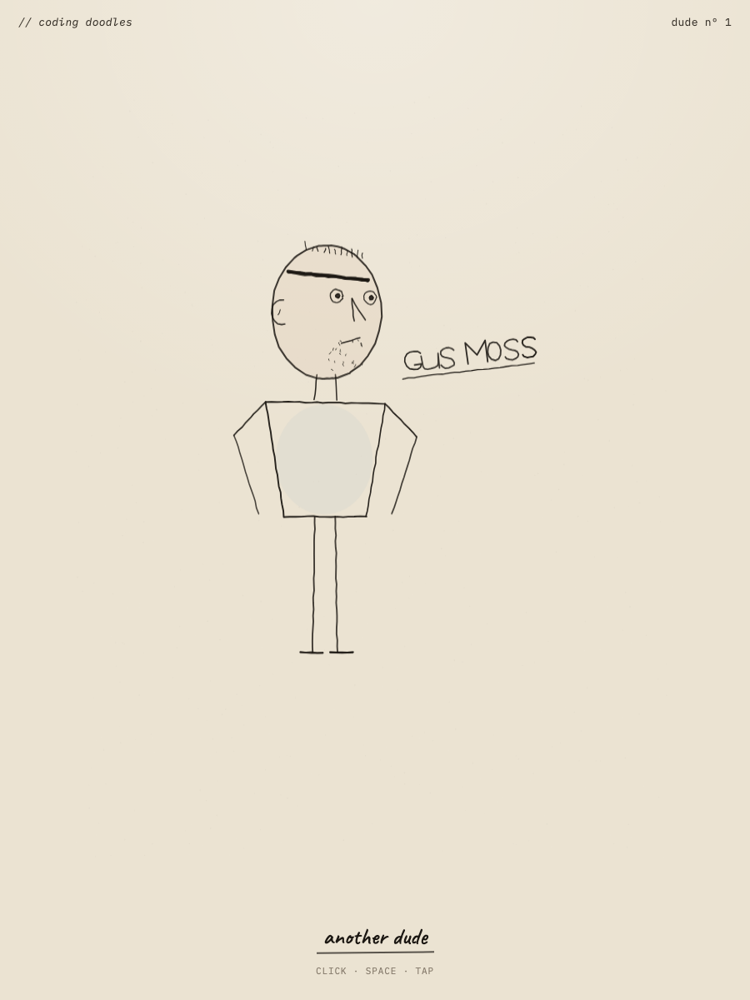

Bar: Mannay’s coding-doodle plates in refs/. Goal: one dude, a body, a pen-and-ink name, a button that draws another.
refs/mannay-sheet-*.jpg, refs/mannay-moar-*.jpgrefs/mannay-faces-1.jpg, images/IMG_5220–5227v2 — 3D skull (yaw / pitch / roll) after reading the lab video. Features stay on the head when it turns. Body and ink still lose to the plates.

